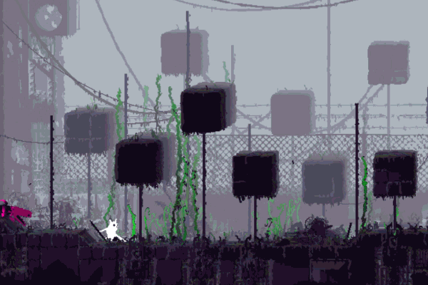
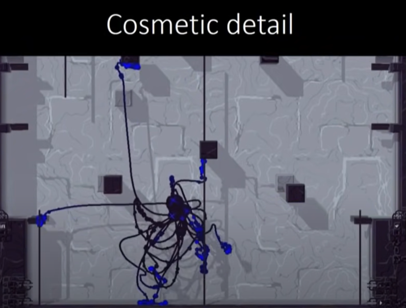
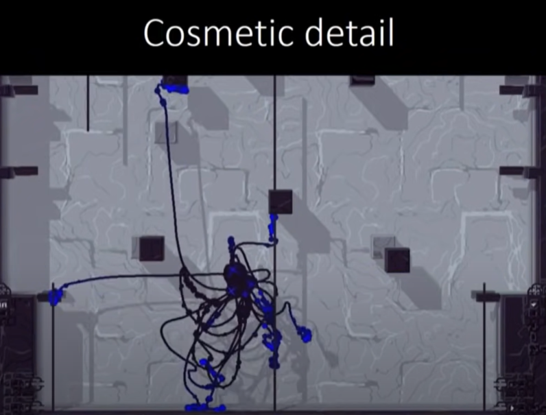
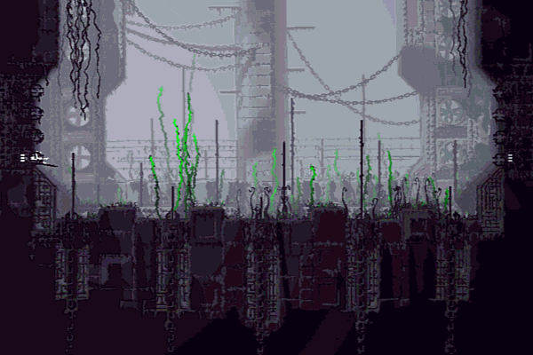

How Procedural Animation can be Great!
Apr 9, 2023 GIF from Wikimedia.
What Makes Procedural Animation So Special?
When creating a video game, the most often picked forms of animation are usually premade animations or assets, this is when animation is made frame by frame or when a model is rigged. Frame by frame is what can be seen in old cartoon Disney animated films like the original Snow White and Aladdin. It happens when artists draw each frame or still picture by hand. So in a 24 frames per second animation, 24 frames would appear for one second. 3 Dimensional models are more like Disney's Toy Story or Frozen. Bones are put into these models that can help Rig artists move the models. These types can be referred to as traditional animation for video games.
However there is another type called procedural animation which is made up of “interactive code” defining how “the visuals will move” (“The Rain World Animation Process” 3:07). Although it can be difficult to implement and may result in worse animation than traditional, if used well and in the right places it(procedural animation) could be used to great effect due to how it creates organic interactions with environments, makes creatures and movement feel and look realistic, and also adds identity to a game.
How Rain World Uses Procedural Animation
An example of how it can create organic interactions with environments is seen within one of Rain World’s creatures called the Daddy Long Legs. It is a creature similar to a spider with tentacles that extend outward around its environment to hold its main body up. The way it works, Joar Jakobsson said, is by using code to check the “ideal grab position” for its legs to grab onto (“The Rain World Animation Process” 18:27). However sometimes it is too far or floating in the air which the creature can’t grab onto. For that reason it checks the surrounding area for grab positions that are close to the ideal one, “meaning that over the course of several frames it will gravitate towards a better position” (“The Rain World Animation Process” 17:16).
All this code adds up to meaning that the creature doesn’t always choose the perfect way to go. This means that it is sometimes imperfect which is similar to actual animals and people who make mistakes. Because of that, it makes the interactions with the game environments and tiles actually feel organic which adds to how procedural animation can be very useful.
 

A Daddy Long Legs is pictured above from Rain World, first with the yellow dot showcasing the ideal grab position for the creature with the green denoting a possible grab position. Both images are from a GDC talk.
How Procedural Animation can Make Movement Realistic
Another way that procedural animation can be used well, is when making movement feel and look realistic. It can for instance be seen in Rain World through Slugcat, the main player character, which as already noted uses code to determine where the foot placement will be for the character. This can be very useful as instead of using a frame by frame approach, the movement in Rain World is personalized for the environment making each step and climbing animation unique to the world around the character.
Interestingly it can also be seen in other games that don’t predominantly feature procedural animation. Blodgett, a game developer with a specialty in procedural animation, points out how even traditionally animated looking games like Assassin's Creed tend to “use a ton of procedural animation to achieve parkour” as they determine the hand and foot placement of characters (“Is Procedural Animation Worth it?” 14:27). This is for the reason that traditional animation in these instances would look off when the player could pick from multiple different places to grab onto a ledge. This ends up making procedural animation very useful for animating movement as it can make it feel realistic and unique for a multitude of different scenarios.
A Slugcat is pictured above from the game Rain World. Gif is from giphy.
Craft a Unique Identity
Another benefit to using procedural animation in one’s game is that it adds character, personality, and identity to a game. To mention first Rain World again, it started off as “a tech demo”, experimenting with procedural animation (“Is Procedural Animation Worth it?” 9:30). “People really liked the look of it” Blodgett said, and Jakobsson then fleshed out and developed into a full game (9:32). This decision of using procedural animation influenced the rest of the game’s development’s creatures, all being influenced by him having to “define a new workflow for himself” (10:32).
Another game that is also defined by procedural animation is Spore, a game where you create creatures that eventually grow, evolve, and form a vast civilization across the galaxy. In it, a mix of traditional and procedural animation was used to create the animations for the creatures which are one of the major defining features of the game. It forms the main identity of the game as it is remembered and heralded for its creature creation system.
Another game, though still in development, is Critter Crosser by Rujik the Comatose. Its main appeal is similar to Spore with it using sets of parameters to shape the creatures of the game. Without procedural animation and design being involved it would be difficult to make a game like it. It adds character and personality by having the critters be unique through player input. For that reason though some argue against its usefulness since it can be hard to implement it can help form an identity for the type of game one creates when used as a main feature for one’s game.
Closing Thoughts
So even though it can be difficult to implement and may look worse than traditional, if used well and in the right places procedural animation can be used with amazing effects by making organic interactions with environments, making creatures feel realistic, all the while also adding identity to your game. And, besides just procedural animation serving these specific purposes, it could also be worth looking into more ways of blending procedural animation and traditional animation, or even taking it outside of gaming.
Works Cited
“Is Procedural Animation Worth it?” YouTube, uploaded by Benjamin Blodgett, 26 February 2022, https://www.youtube.com/watch?v=H70kLqA7LaU&t=640s&ab_channel=BenjaminBlodgett.
“The Rain World Animation Process.” YouTube, uploaded by GDC, 15 July 2017, https://www.youtube.com/watch?v=sVntwsrjNe4&t=143s&ab_channel=GDC.